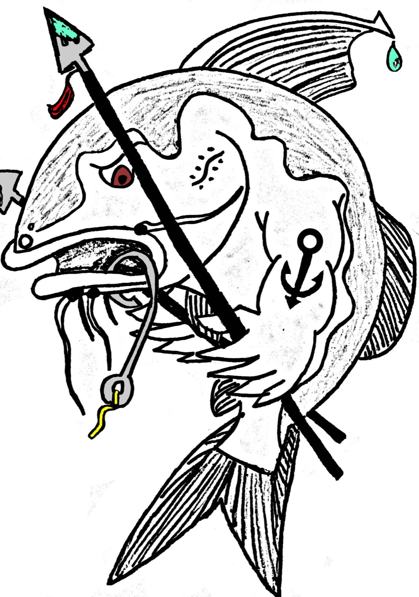

2010-06-30
Zero to Hero: a change of perspective
To whom it may concern.

The warrior barbel
I am going to tell you secrets that have ensured the propagation of our family, secrets that I hope you will remember and tell all who will listen. There are lessons to be learnt so take note in what I say. I am a sea catfish, one of only two species to have made it in the big blue ocean. Galeichthys ater and Galeichthys feliceps are names you have bestowed on us and for the sake of simplicity I will refer to us by these names.
The type of man I am and the other men I meet and deal with on a daily basis in my watery world are armed with three spines, each covered in toxic mucus. The spines are wielded in each “arm” and one on their back for. These spines will bring tears to even the toughest of your species if you get in their way, and the wounds they inflict on you are potentially fatal if not looked after. The term “hard as nails” doesn’t do justice to what my friends and I do to prove our worth. The men I know have got no time for ball games, drinks at the pub or even social ‘braais’. We men spend the better part of the autumn and winter months training hard and bulking up, preparing ourselves for the most challenging time of our lives. Three months of intense training, eating anything presented, including all the “trick treats” you present to us. This training, in all of its preparation, surmounts to its climax at our yearly ball where only the toughest get the girl. The details of our courtship ritual will be the only secret I shall neglect to divulge as it is ours and would end in disaster if it fell into the hands of a hormonal 16 year old boy.
The lovely ladies of our species come to the ball well prepared with a brood of eggs ready for spawning. These will be our future generation and require our touch to begin development. Once our women have given in to our charms they proceed in soliciting us by vibrating their “arms” back and forth, creating music unlike anything you will ever hear. They carefully collect their eggs, cradling them in their pelvic fins, lovingly presenting them to us as a gift. Delicacy is not a trait that most men possess and yet we manage to receive these, now to be our eggs, by only using our mouths. This marks the beginning of our journey as a man. Our ladies move off and begin feeding in the summer months to replenish the energy spent during spawning, once again readying themselves for the season to come in the following year.
The job entrusted to me will test my commitment and the strength of my character. The true test of a man is not what he does while being watched, but what he does when no one is watching. My mouth, which is only capable of holding roughly 60 eggs, and for that I can only thank evolution, because any-more and I am not sure I would have the strength to see my task through! Surely you men know that 60 eggs is among the lowest number of eggs produced in a year by any other teleost fish (a large group of fishes with bony skeletons, including most common fishes). Knowing this, you may understand why it so utterly important that I succeed in preparing my offspring for the hardships that lie in wait. My job is to prepare them, give them a head start and in doing this I will go to extraordinary measures.
The majority of my mouth begins to be covered with a film of insulating mucus, the kind of thing you could expect from a bad dentist, which will later be used as baby food. The quality and amount of mucus made will depend on how well prepared I was and how much fat I was able to deposit when on my feeding frenzy. It is now my job to relocate to a safe area where I will be able to remain for the better part of three months. I have no worries of food, obviously using my mouth as a haven, thus refraining from eating whilst caring for my offspring. Once the eggs hatch they will be allowed to swim in and out of my mouth freely, providing I deem it safe. I make sure that they have no worries of food as they feed on the mucus within my mouth. This decreases their energy spent on foraging and increases their energy spent on growing, allowing my offspring to have a higher chance of survival. I am thus, the ultimate dad and parent, the best they will ever have! When I feel that my children are ready to take on the elements themselves, I will move off and leave them in a safe place where food is plentiful and predators are few.
Ah, then I begin feeding again, for that wonderful woman I will meet, that magical song she will sing me whilst, once again, entrusting her eggs to me so that I will nurture them for her, and I. It will be a gradual process, as I am normally weak, but come autumn, make damn sure I will be ready. It is thus that anything in sight will be stored for this following year’s ultimate climax once again!
I have written this letter in the hope that it will change the way we are handled when you humans catch us as I have lost many good men to your trick meals in the most inhumane ways. The brutal beating of another species is no way to act. I know that the toxic spines are no encouragement and I desperately plead, that the next one of my friends you catch, you seriously consider the hardship he has undertaken in this preparation. Ask yourself: “Would I survive?” If the answer is yes then you are either a liar of the holotype of your species. On behalf of G. atar and G. feliceps Thanks